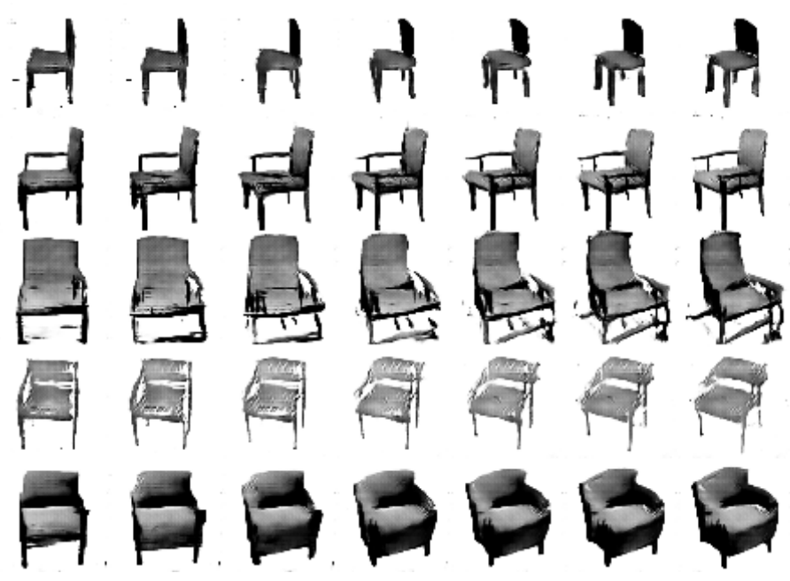
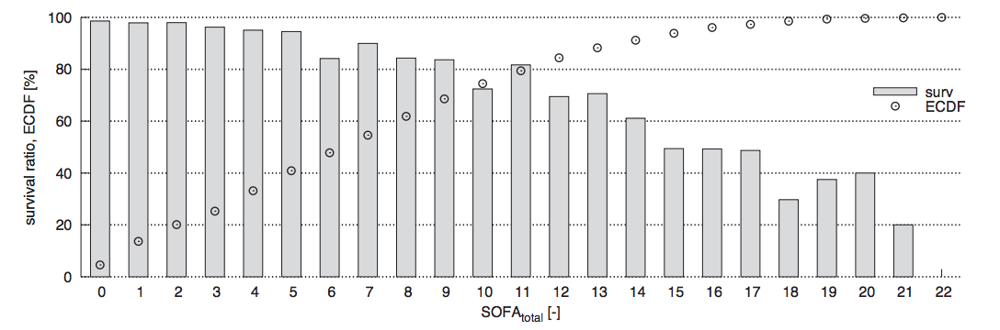

Projects
Deep Reinforcement Learning and Generative Models
Reinforcement learning (RL) using nonlinear function approximators with a focus on continuous control tasks such as robot locomotion. In particular, the goal is to investigate how to achieve efficient exploration in deep RL through curiosity. This research was performed in collaboration with OpenAI and the Berkeley AI Research lab.
|
#Exploration: A Study of Count-Based Exploration for Deep Reinforcement Learning Deep Reinforcement Learning Workshop at NIPS, 2016 H. Tang, R. Houthooft, D. Foote, A. Stooke, X. Chen, Y. Duan, J. Schulman, F. De Turck, P. Abbeel |
|---|
|
VIME: Variational Information Maximizing Exploration Advances in Neural Information Processing Systems (NIPS), 2016 R. Houthooft, X. Chen, Y. Duan, J. Schulman, F. De Turck, P. Abbeel |
|---|
|  |
InfoGAN: Interpretable Representation Learning by Information Maximizing Generative Adversarial Nets Advances in Neural Information Processing Systems (NIPS), 2016 X. Chen, Y. Duan, R. Houthooft, J. Schulman, I. Sutskever, P. Abbeel |
|---|
|
Benchmarking Deep Reinforcement Learning for Continuous Control International Conference on Machine Learning (ICML), 2016 Y. Duan, X. Chen, R. Houthooft, J. Schulman, P. Abbeel |
|---|
Structured Prediction and Deep Learning
As part of an autonomous vehicle project, the goal was to combine structured output prediction and deep learning techniques, with a particular focus on semantic image segmentation. Structural support vector machines (SSVMs) were extended to allow for highly nonlinear factors. This can enhance output coherence of deep predictive models, while still allowing for end-to-end training. Below the architecture of a deep SSVM with convolutional neural factors is pictured.
|
Integrated Inference and Learning of Neural Factors in Structural Support Vector Machines* Pattern Recognition, vol. 59, 2016 R. Houthooft, F. De Turck |
|---|
|
Structured Output Prediction for Semantic Perception in Autonomous Vehicles* The 30th AAAI Conference on Artificial Intelligence (AAAI), 2016 R. Houthooft, C. De Boom, S. Verstichel, F. Ongenae, F. De Turck |
|---|
* This work is part of an applied research project in collaboration with Case New Holland (CNH) Industrial. As such several methods, models, datasets, and results could not be publicly released due to confidentiality agreements. An addendum to these papers can be found here. Initial vehicle controller patent applications have been filed.
Artificial Intelligence in Healthcare
In collaboration with the Laboratory of Intensive Care Outcomes Research of the Universitair Ziekenhuis Gent, this applied research project investigates the use of machine learning techniques for predictive modeling and medical decision support in the intensive care unit.
|  |
Predictive Modelling of Survival and Length of Stay in Critically Ill Patients using Sequential Organ Failure Scores Artificial Intelligence in Medicine, vol. 63, no. 3, 2015 R. Houthooft, J. Ruyssinck, J. van der Herten, S. Stijven, I. Couckuyt, B. Gadeyne, F. Ongenae, K. Colpaert, J. Decruyenaere, T. Dhaene, F. De Turck |
|---|
Network Science
My research originally focused on the development of a novel routing algorithm called Forest Routing. Through geometric routing, using a set of graph embeddings in a particular mathematical space, it offers both high scalability and native load balancing behavior. A coherent write-up on the subject can be found in my thesis Adaptive Geometric Routing for the Internet Backbone. Below a demonstration of the developed model is shown.
|
Optimizing Robustness in Geometric Routing via
Embedding Redundancy and Regeneration Networks, vol. 66, no. 4, 2015 R. Houthooft, S. Sahhaf, W. Tavernier, F. De Turck, D. Colle, M. Pickavet |
|---|
|
Robust Geometric Forest Routing with Tunable Load Balancing The 34th Annual IEEE International Conference on Computer Communications (INFOCOM), 2015 R. Houthooft, S. Sahhaf, W. Tavernier, F. De Turck, D. Colle, M. Pickavet |
|---|

|
Fault-Tolerant Greedy Forest Routing for Complex Networks The 6th International Workshop on Reliable Networks Design and Modeling (RNDM), 2014 — best paper award Featured in Global Communications Newsletter May 2015 R. Houthooft, S. Sahhaf, W. Tavernier, F. De Turck, D. Colle, M. Pickavet |
|---|